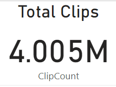
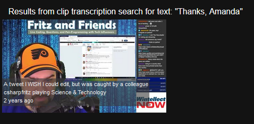
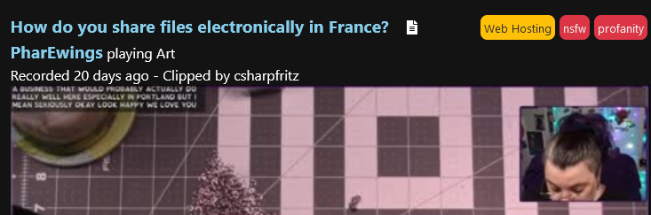

Milestone Reached - 4 MILLION Clips Indexed!
KlipTok just crossed another major milestone on the evening of August 18th:

We're now service more than 4 million klips for about 750 Twitch channels with more than 11k transcriptions. It's a huge step, and is stored on about 10GB of storage for the database and search indexes.
How are those 4 million clips stored and indexed?
The clips are stored in a MySql database hosted on Microsoft Azure that allows us to join in and query based on the channel id or the unique 'slug' text that identifies the clip.
There are entries in Azure Table Storage for the titles of the clips and the transcriptions of the clips. This table storage is further indexed by Azure Cognitive Search so that you can search for clips based on the title of the clip or the words spoken in the clip.
I use Azure Service Bus to process all of these records as they arrive from Twitch, get processed by AssemblyAI for transcripts, and store the clip data for processing and search indexing.
That's... that's a lot of storage to manage and indexes to update. What if we could make that a lot more concise and simpler?
Enter RavenDb
Starting next week, we're going to start migrating data to RavenDb. RavenDb is a NoSQL database provider that has a bunch of smart features built into it that allow it to detect and build indexes appropriately for our queries. It also has a built in search indexing feature that allows us to generate a search index and search fields in document records.
Additionally, I have found and witnessed a few demos that show how to build an elementary recommendation engine using RavenDb queries. When I saw these demos, I was sold on being able to build and roll out a better list of recommended channels and clips to discover on the front page of KlipTok.
RavenDb feels like a perfect match for the various ways that we store and interact with clip data for KlipTok. I hope you tune in to the csharpfritz Twitch stream in the week ahead as I migrate and roll out this update.
Version 0.23 - Introducing IAB Categories and Content Safety
This week we are happy to announce the release of Version 0.23 with a number of small fixes, updated translations, a new translation for Slovenian, and a new feature: IAB Categories and Content Safety tags for transcribed clips. I'm definitely burying the lede here, but I think it's worth it to give you a quick summary of what's new.
IAB Categories and Content Safety
With our partners at Assembly AI, we've introduced IAB Categories and Content Safety tags to clips. You'll recall that we added clip transcriptions to KlipTok in July and made those transcriptions available to search. We're the only website on the internet where you can search for videos based on the dialogue in the video.

Search for 'Thanks Amanda' and finding the clip where I say "Thanks Amanda"
The Interactive Advertising Bureau (IAB) has a set of categories that you can use to categorize your videos. They're a great way to make sure that your videos are appropriate for children and young people. A full list of categories is available online. We've added the categories to KlipTok and you can see them tagged on clips that have been transcribed.

IAB Category Tags and Content Safety Tags for a clip
AssemblyAI provides a feature to detect the IAB Categories of your videos based on their transcript. These categories can be VERY accurate... and sometimes a little funny in what they are guessing your clips are about. KlipTok is only going to show the first 4 categories with more than 60% confidence that it thinks your video falls into. There's a hidden tooltip on each of the tags showing the confidence percentage reported by AssemblyAI's detection algorithm for that category on the clip.
Content Safety tags
The second AssemblyAI detection feature we are implementing is the detection of content safety warnings. This feature uses the same transcription analysis and detection request to detect foul language and other topics that may require content safety warnings in various cultures. These tags are added with a red background to separate them from the category tags. Just like the IAB category tags, you can inspect the hidden tooltip on each tag to see the confidence percentage reported by AssemblyAI for each tag.
Translation Updates
Translations for KlipTok (to date) have been created and maintained by the user community. We saw a few updates over the last week for Farsi, Finnish, German, Indonesian, Italian, and Polish translations. Additionally, Slovenian was added to our roster of 23 languages supported by KlipTok.
Finally, we have updated the translation combobox to list each supported language in their native language to make it easier to locate and translate KlipTok to your preferred written language.

Native translations of the languages in the language selector
How does KlipTok translate to your language?
KlipTok uses a library called Toolbelt.Blazor.I18nText to translate its text. There is an object embedded in every Blazor component delivered on KlipTok called Localize that loads up the correct translation file for your language.
if (Localize == null)
{
Localize = await I18nText.GetTextTableAsync(this);
StateHasChanged();
} All text that is rendered for the web page passes through that collection. The Search bar at the top of the screen has it's watermark text placed with:
@Localize?["SearchKlipTok"]The search results text referencing the SearchTerm submitted is formatted like this:
@string.Format(Localize?["SearchedKlipTokAndFoundTemplate"], SearchTerm)
The translations are all stored in JSON format and open for community contributions on GitHub
Up Next
KlipTok has grown and become a bit more complex over the last few months. We're service more than 3.8 million clips and need to provide some assurance that updates to the site don't break things. I've started working on building integration tests using Playwright and will be making those test scripts publicly available on GitHub as well.
Summary
Introducing these new features and translations has added a lot of value to KlipTok and made it easier for your to understand the content you'll find in the clips we present. I hope you find these new features useful as I move forward with additional improvements.
Most Requested Feature Deployed - Live Now on Twitch
Over the last few months, the most requested feature on KlipTok on the feedback site has been the addition of a "Live Now" indicator for the list of channels.
On Twitch, its a simple red circle.. the circle doesn't really tell you anything, and you need to hover over it in order to see what it actually means. On KlipTok, we want to be more inclusive and support folks that have different web usage capabilities.
Our 'Live Now' indicator is a red rounded square with the word 'LIVE' in the middle. It's easy to spot and clear what it's referring to. If you click on it, you'll be taken to their channel in a new tab of your browser.
You can even use the sidebar refresh buttons, the spinning arrows next to the titles in the sidebar, to refresh the list of current channels that KlipTok has for you and it will update the Live status appropriately as well.

Implementation of the Live Indicator on KlipTok
Behind the feature - How does it work?
As more of KlipTok is built, we're going to use this as an opportunity to TEACH more about how to build websites and the features behind them. Going forward, look for descriptions about the KlipTok architecture, but not all of our secrets, whenever a new feature is released.
Getting the Live Status from Twitch
The Twitch APIs make it easy to run a query to collect the current state of a stream.
GET https://api.twitch.tv/helix/streams?user_id=96909659&user_id=63208102
This query would return data similar to the following:
{
"data": [
{
"id": "41375541868",
"user_id": "96909659",
"user_login": "csharpfritz",
"user_name": "csharpfritz",
"game_id": "509670",
"game_name": "Science & Technology",
"type": "live",
"title": "Writing software",
"viewer_count": 78,
"started_at": "2021-03-10T15:04:21Z",
"language": "es",
"thumbnail_url": "https://static-cdn.jtvnw.net/previews-ttv/live_user_auronplay-{width}x{height}.jpg",
"tag_ids": [
""
],
"is_mature": false
},
...
],
"pagination": {
"cursor": "abcdef1234"
}
}
When KlipTok's background processes run to discover newly created clips, they inspect the list of currently active streams and ONLY search those streams for new clips. We know that more than 95% of the clips that are created for a stream are created while the broadcaster is actively streaming, so we focus on collecting those clips as they are created. Once an hour, we examine ALL channels that KlipTok has indexed.
Since we were collecting this data about the active streams in order to filter the list of channels that the KlipTok processes were searching against, why not save that information and present it to the KlipTok users as they use the site? Easy enough... we created a LiveChannels table and stored the id of the channels that are currently streaming.
I wrote a method on our LiveChannelsRepository class that would Replace the current contents of the table with the collection of the live channels we discovered. It's crude, but it works.
await _LiveChannelsRepository.Replace(
liveChannels.Select(l => new Twitch.TwitchStreamRecord
{
user_id = l.ChannelId,
started_at = l.LiveSince
})
);When we assemble the sidebar for a user, we include the LiveChannels table in the query and present the Live Indicator when a record is present in the LiveChannels table for the channel in the sidebar.
Summary
Adding this feature was a great re-use of existing data that KlipTok was already working with, and feels almost like re-using content with no additional cost to us. Stay tuned as we add new Search features, clip metadata, and launch the Top 5 Klips of the Week in August.
Welcome to KlipTok!
This is our first post on the KlipTok blog, and I'm thrilled to have this live for folks to learn more about how KlipTok is built and to allow us to announce new features as well as milestones reached. I'll have a few more posts today and later this week talking about what KlipTok is, how it was built, and how you can participate.
How it started
KlipTok has been built by a Twitch Streamer, for Twitch Streamers, LIVE on Twitch. It started in November 2020 as an idea to help make Twitch clips more discoverable with a UI that brought your favorite clips from the channels you follow. That 12-hour stream is archived and available:
The technical goal of this web application was to build a complete site using the Blazor web framework with C# and .NET 5 running completely on Microsoft Azure. We use Azure Static Websites to make that happen along with a number of other Microsoft Azure services, and we'll cover more of that in an upcoming blog post.
Fast Forward to Today
At the time of the writing of this blog post (at the end of July 2021), we're about 8 months into the evolution of the site and it hosts about 680 channels clips. There are more than 3.1 million clips that KlipTok has indexed and are available for you to discover.
We've added the ability for the site to be translated to a number of different languages with the help of our KlipTok community. The translations are all available in JSON format on GitHub and you are welcome to contribute new or missing translations.
Viewer and user feedback is VERY important to me in the construction of KlipTok, and I've configured a user feedback website using Fider. You can see the requested features and my notes about the next features that are going to be built at https://feedback.kliptok.com
I'm writing a handful of posts to get things started here to describe some of the direction behind the site, the tenets we follow as development progresses, and the Azure-based architecture used.
I hope to separate the Blazor application into its own repository and release the UI as an open source project before the end of July 2021. In this way, you can learn from how the application was written and even contribute back some updates to improve the user-interface.
One more thing...
I've added an amazing feature to KlipTok with the help of the folks at Assembly AI to provide transcription for clips. This means you can search for clips based on what was SAID in the clip, not just the title of the clip. This is the ONLY video sharing service on the internet that provides this service, and we have much more planned with our friends at Assembly AI.
Summary
So.. welcome to KlipTok! I'm looking forward to building much more for this web application and learning about how to use many more cloud services and taking advantage of the coolest new .NET technologies to grow it and make it an application you find useful.